Maria Jose Coronado Mendez
Ingeniería Industrial y de Sistemas
Docente guía: Mgs. Melisa Guzmán Vega · Santa Cruz de la Sierra, 2026
Las salas de Embutidos y Vacío de la empresa ABC ejecutan la limpieza industrial sin procesos estandarizados. Esto genera:
"Elaborar una propuesta de estandarización de procesos y optimización de recursos enfocados en la limpieza industrial de las salas de Embutidos y Vacío de la empresa ABC."
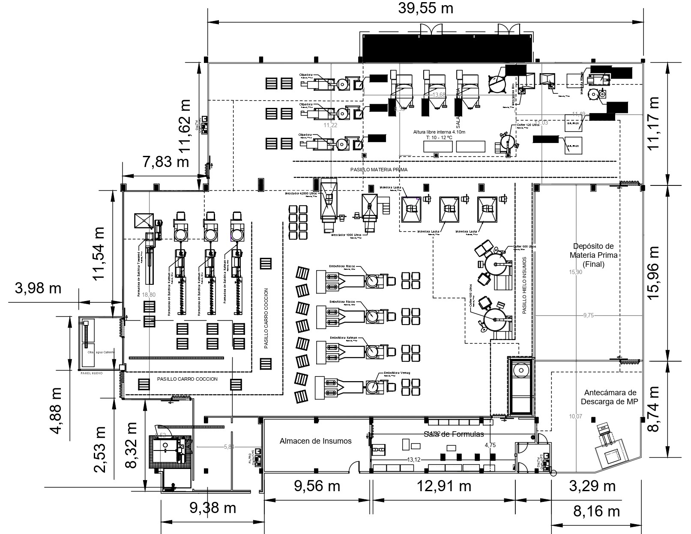
Planta de Ulterior y Congelados (PUyC)
Limpieza preoperacional nocturna · 21:00 – 05:00 hrs
Realizar un diagnóstico de la situación actual del proceso de limpieza industrial dentro de las áreas de Embutidos y Vacío.
Analizar los aspectos críticos detectados mediante ingeniería de métodos, para establecer la base de la propuesta de mejora.
Proponer mejoras en el proceso actual de limpieza industrial de las salas de Embutidos y Vacío.
Realizar un análisis costo-beneficio de la propuesta de mejora de la limpieza industrial.
Organización boliviana dedicada al procesamiento y comercialización de productos cárnicos de cerdo, res y pollo. Certificada bajo ISO 9001 y con seguimiento de Buenas Prácticas de Manufactura.
El proyecto se desarrolla en la Planta de Ulterior y Congelados (PUyC), unidad dedicada a productos cárnicos de valor agregado.
La limpieza se ejecuta al finalizar la jornada productiva, en turno nocturno, para no interferir con las operaciones de producción. El personal está dedicado exclusivamente a tareas de sanitización.
Selección, pesaje y carga de soluciones en espumadoras y baldes
Remoción de bandejas, cuchillas, cintas e inyectores
Retiro de residuos gruesos con agua a presión
Aplicación de espuma alcalina, ácida o neutra
Refregado con cepillos y esponjas
Agua potable a presión controlada
Inspección visual del área de Calidad (CQ)
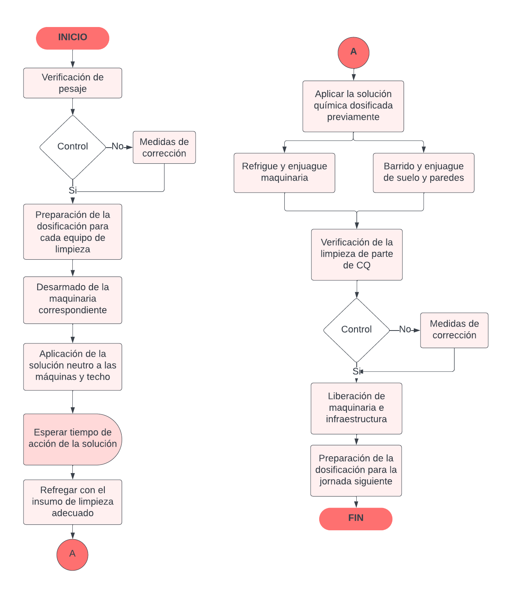
Diagrama de flujo del proceso de limpieza
VQ 2000 (maquinaria) · VQ 3500 (infraestructura) · VQ 30 (inyectora) · EasyFoam (carros) · Neutro (uso general) · Ácido Nítrico (drenajes)
3 mochilas de desinfección (45 L) · 2 espumadoras fijas · 2 espumadoras adaptadas a móvil (45 L) · 2 espumadoras con regulador de caudal (100 L)
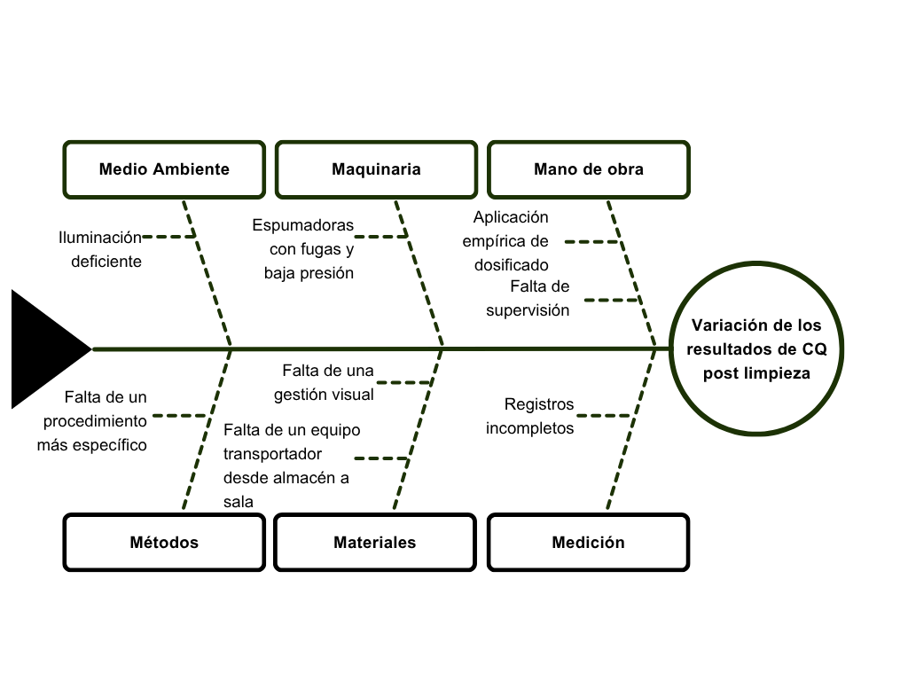
Diagrama de Ishikawa — Sala de Embutidos
Efecto: variación en los resultados de CQ después del proceso de limpieza
Falta de supervisión del dosificado; los operarios aplican los químicos empíricamente sin usar instrumentos de medición.
El instructivo de dosificado existente es demasiado general y no especifica actividades por equipo.
Jarras medidoras sin etiquetar; el traslado de insumos se hace pieza por pieza desde el almacén.
Espumadoras con fugas y baja presión; iluminación deficiente en sectores; registros incompletos y no sistemáticos.
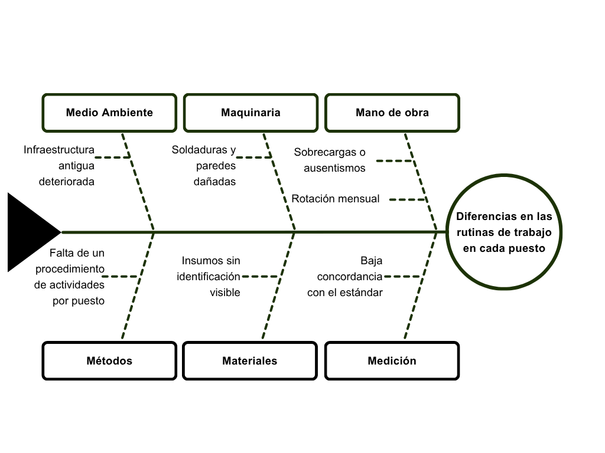
Diagrama de Ishikawa — Sala de Vacío
Efecto: diferencias en las rutinas de trabajo de cada puesto — falta de estandarización de actividades
Rotación mensual del personal de limpieza y de calidad; el ausentismo obliga a cubrir tareas que no se dominan.
No existe un instructivo que defina las actividades por puesto de trabajo.
Desgaste en paredes, uniones y superficies; soldaduras dañadas que dificultan mantener una rutina uniforme.
Insumos sin identificación visible; baja concordancia con el estándar durante las verificaciones.
| Químico | Litros / sem | Bs / litro | Costo semanal | Destino |
|---|---|---|---|---|
| VQ 2000 | 114 | 25,00 | 2.850,00 | Equipos |
| VQ 3500 | 120 | 17,25 | 2.070,00 | Infraestructura |
| Ácido Nítrico | 84 | 24,00 | 2.016,00 | Canaletas |
| Easy Foam | 60 | 18,00 | 1.080,00 | Carros |
| Neutro | 135 | 7,14 | 963,90 | Espumado |
| VQ 30 | 12 | 39,75 | 477,00 | Inyectora |
El VQ 2000 concentra el 30% del gasto semanal en químicos, lo que lo convierte en la prioridad de optimización.
Datos obtenidos de la observación directa durante dos semanas de operación y del registro histórico de consumo, valorizados al precio de proveedor del mes analizado.
Determinar, para cada actividad, la dosificación mínima que cumple los criterios de aceptación de Calidad, evitando tanto la sub-dosificación (limpieza ineficaz) como la sobredosificación (desperdicio y residuo químico).
Alternativa seleccionada:
Neutro 3,00%
100 L de agua · 3,00 L de producto
Costo: 18,62 Bs por preparación
Alternativas seleccionadas:
VQ 3500 2,50%
20 L de agua · 0,50 L → 7,50 Bs
VQ 2000 al 2,00% → 8,70 Bs
Alternativa seleccionada:
Neutro 3,00%
45 L de agua · 1,35 L de producto
Costo: 8,38 Bs por preparación
Hallazgo: la eficacia varía según el material del equipo y la temperatura del agua. El VQ 2000 al 2,00% con agua a 40 °C dio el mejor resultado en superficies metálicas.
Limitación observada: en materiales sintéticos, como las cintas transportadoras, persiste una ligera película de grasa que requiere tratamiento diferenciado.
La comparación entre la concentración indicada en el procedimiento y la aplicada efectivamente en planta revela desviaciones sistemáticas en ambos sentidos.
Sub-dosificación (hasta −49%): reduce la eficacia de la limpieza y explica las observaciones fuera de especificación registradas por Calidad.
Sobredosificación (hasta +150%): genera desperdicio de insumo, mayor costo y riesgo de residuo químico en superficies de contacto.
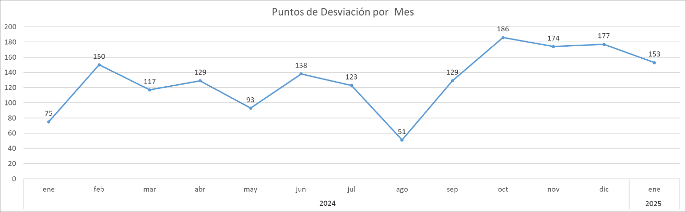
Puntos de desviación registrados por mes — enero 2024 a enero 2025
La amplitud entre el mejor y el peor mes supera el 260%, evidenciando que el resultado de la limpieza no es reproducible.
Las inspecciones se realizan diariamente sobre equipos, pisos, paredes, drenajes y utensilios, priorizando superficies en contacto directo con el producto, y se clasifican según su criticidad.
Se cronometraron las cinco etapas del proceso (hidrolavado, espumado, refregado, enjuagado y desinfección) agrupadas por tipo de equipo, y se aplicó el sistema Westinghouse para el factor de calificación.
El refregado concentra la mayor carga del proceso con 1.379,59 minutos, seguido del enjuagado con 948,94 minutos.
Suma del tiempo estándar de todos los agrupadores de la sala.
4.007,45
minutos
Preparación de sala y de químicos: valor no agregado necesario (VNAN).
332
minutos · 8,82% del total
Tiempo efectivo por operario en una jornada de 8 horas.
480
minutos por persona
Headcount = (4.007,45 + 332) ÷ 480 = 9,04 → 9 operarios
El resultado sustenta el instructivo de nueve puestos de trabajo (A–I) desarrollado en la propuesta, donde cada operario tiene actividades, secuencia y materiales definidos.
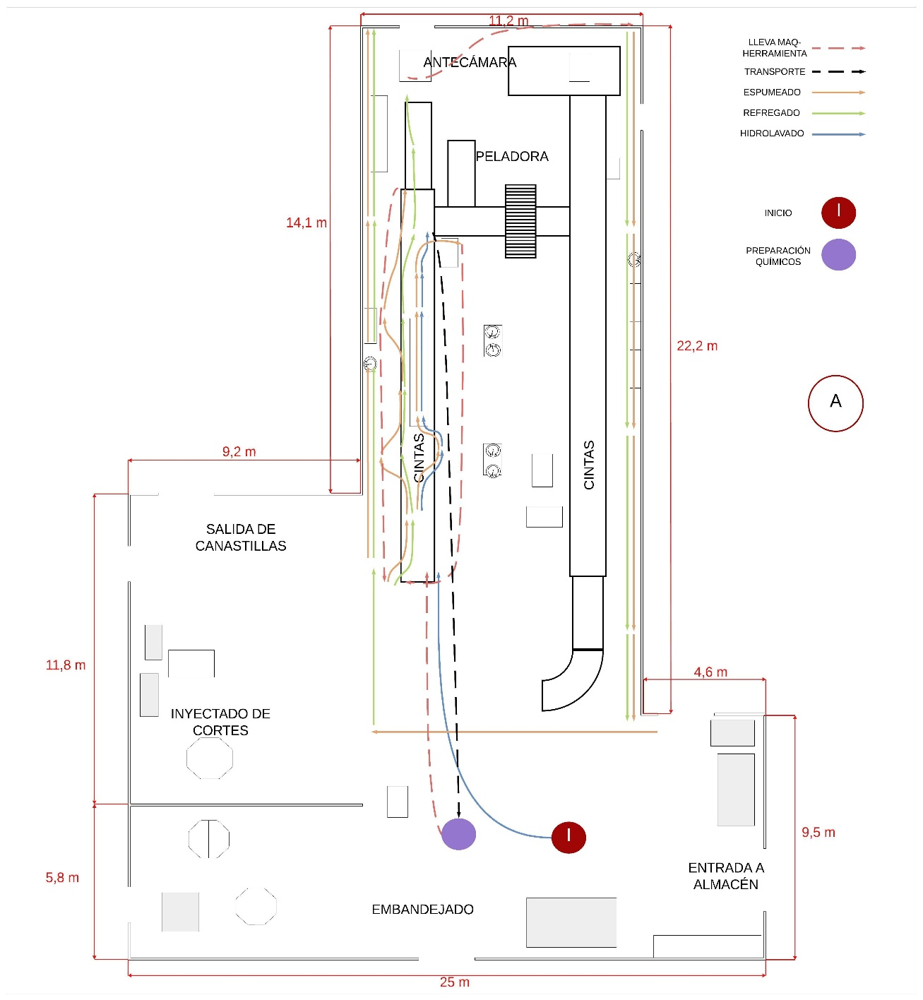
Puesto A — Primer día
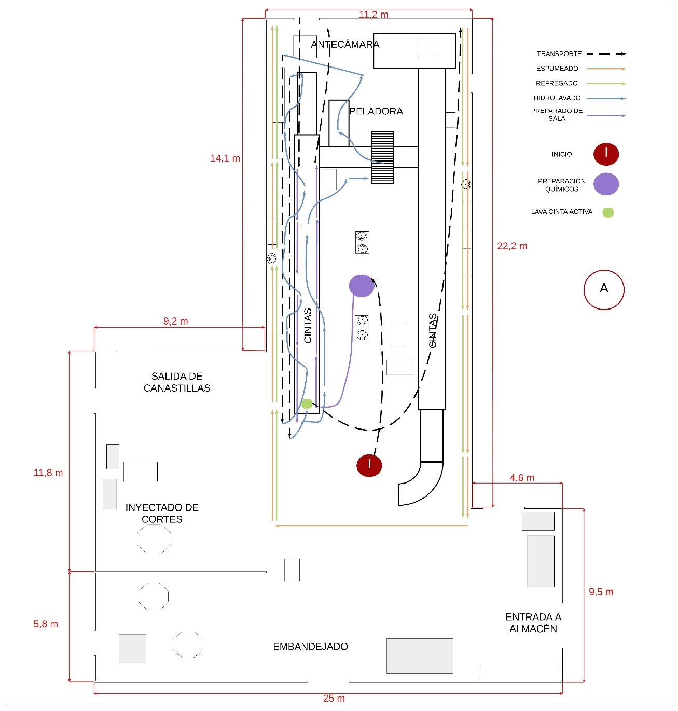
Puesto A — Segundo día
Hallazgo central: el mismo operario, en el mismo puesto y en días consecutivos, ejecuta recorridos y tareas distintas. La situación se repite en los otros ocho puestos observados: no existe una rutina de trabajo establecida.
Recirculación innecesaria entre el depósito y la zona de trabajo
Tareas cubiertas por más de un operario y otras sin responsable
Tiempos de ejecución distintos entre jornadas para la misma actividad
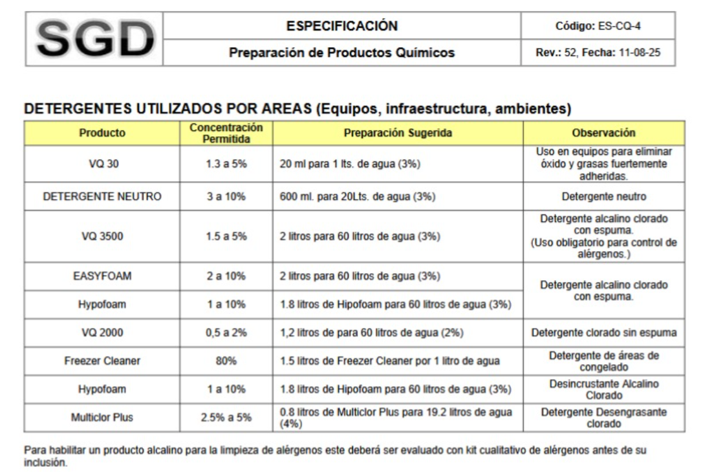
Especificación ES-CQ-4 (Rev. 52) — validada por Control de Calidad
Como resultado del análisis técnico se emite la especificación ES-CQ-4 Rev. 52, que define los parámetros de concentración permitida y las preparaciones sugeridas para ocho detergentes industriales aplicables a equipos, infraestructura y ambientes.
| Químico | Actual | Propuesto |
|---|---|---|
| VQ 3500 | 120 L | 110 L |
| VQ 2000 | 114 L | 105 L |
| Neutro | 135 L | 120 L |
| Ácido Nítrico | 84 L | 78 L |
| Easy Foam | 60 L | 55 L |
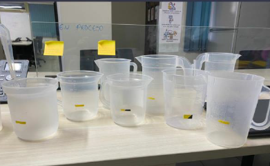
Jarras dosificadoras estandarizadas
Marcas visibles y uniformes para cada volumen requerido
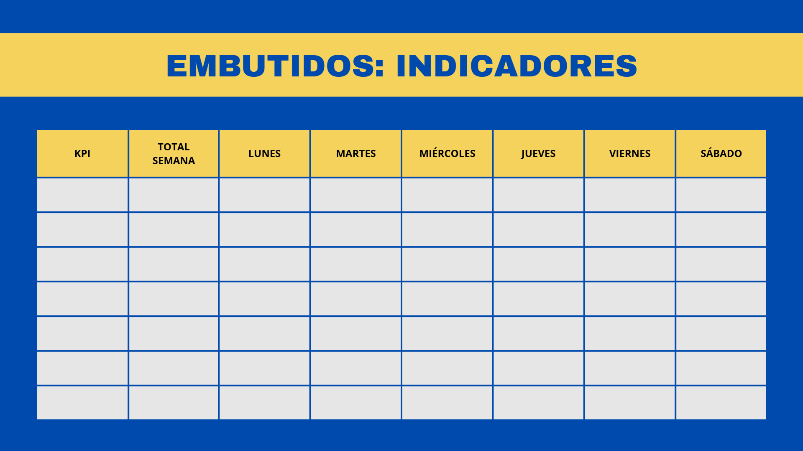
Tablero de seguimiento y gestión visual
KPI, total semanal y desempeño por día, actualizado por turno
17
letreros de PVC: 16 de 30×40 cm
y 1 tablero de 100×140 cm
Dosis exacta de detergente Neutro indicada en cada estación, de 500 a 2.000 ml según el punto
La actualización de datos forma parte de la rutina operativa, fomentando disciplina de registro
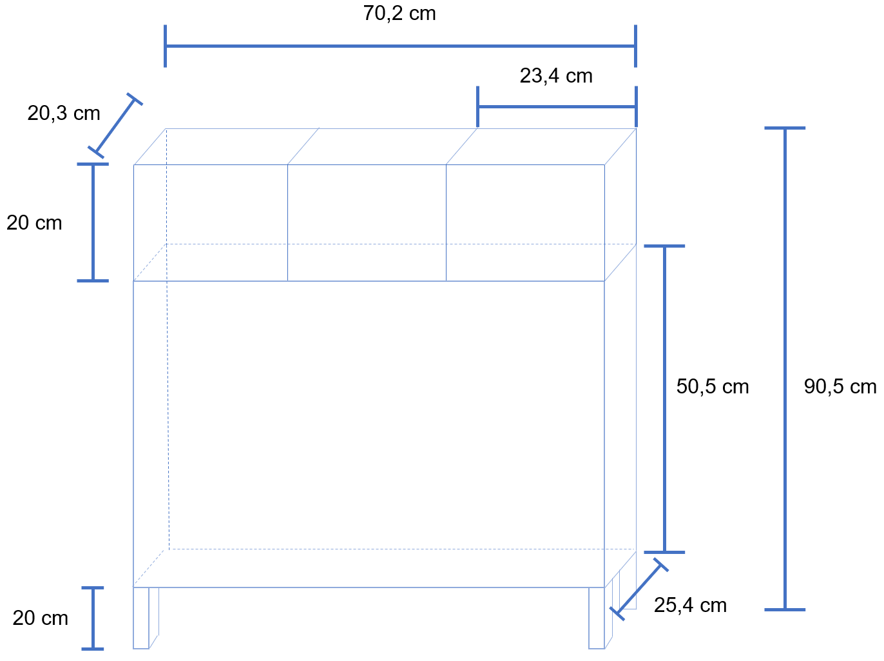
Propuesta de diseño — carrito transportador de insumos
El traslado de insumos se realiza manualmente con los mismos baldes de preparación, obligando al operario a desplazarse repetidamente entre el depósito y la zona de trabajo, con exposición a derrames.
La orden de trabajo fue gestionada mediante el sistema interno de la empresa y se encuentra actualmente en fila de espera para su ejecución.
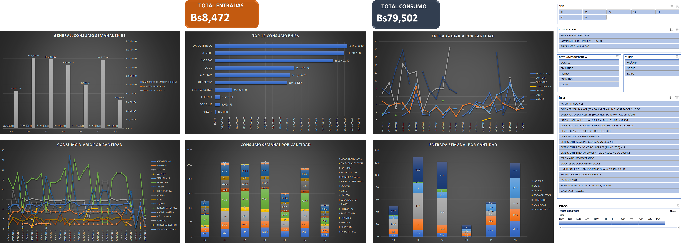
Dashboard de control de consumo de insumos químicos — construido en Excel
Registra entradas y salidas del depósito de químicos con fecha, movimiento, descripción, clasificación, cantidad, costo, responsable y código de material.
Seis gráficos: consumo semanal en Bs, top 10 de insumos, entradas y consumo diario y semanal por producto.
Registra las observaciones de la inspección visual: semana, fecha, ítem, tipo, detalle, si fue corregida y puntos asignados.
Tres gráficos: desviaciones diarias, distribución por tipo y top 10 de máquinas con más observaciones, con umbrales de alerta.
Problema: variación en los resultados de CQ por falta de uniformidad en la dosificación.
Problema: falta de uniformidad en la ejecución del proceso de limpieza.
Programa de formación técnica por competencias impartido por CENACE UPSA, en sesiones de 60 minutos con grupos rotativos para no interrumpir la operación. Se ejecuta trimestralmente para cubrir tanto al personal antiguo como a los nuevos ingresos.
4 unidades en acero inoxidable 304
12.483,72 Bs
Costo único
Servicio externo CENACE UPSA
20.640,00 Bs
Costo recurrente anual
17 piezas en PVC
1.560,00 Bs
Costo único
El análisis diferencia entre costos únicos —carritos y señalética, que se ejecutan una sola vez durante la implementación— y costos recurrentes, correspondientes a las capacitaciones trimestrales.
| Detalle | Actual (Bs) | Propuesta (Bs) | Ahorro (Bs) |
|---|---|---|---|
| VQ 2000 | 148.200,00 | 136.500,00 | 11.700,00 |
| VQ 3500 | 107.640,00 | 98.670,00 | 8.970,00 |
| VQ 30 | 24.804,00 | 16.536,00 | 8.268,00 |
| Ácido Nítrico | 104.832,00 | 97.344,00 | 7.488,00 |
| Neutro | 50.122,80 | 44.553,60 | 5.569,20 |
| Easy Foam | 56.160,00 | 51.480,00 | 4.680,00 |
| Subtotal químicos | 491.758,80 | 445.083,60 | 46.675,20 |
| Personal | 441.771,00 | 397.593,90 | 44.177,10 |
| TOTAL | 933.529,80 | 842.677,50 | 90.852,30 |
B/C = 90.852,30 ÷ 36.315,27 = 2,50
Por cada boliviano invertido se generan 2,50 bolivianos de beneficio
El proyecto es conveniente
El proyecto es indiferente
El proyecto no es conveniente
Con una relación de 2,50, los beneficios superan ampliamente la inversión requerida, lo que respalda técnica y económicamente la implementación de la propuesta.
Los cuatro objetivos específicos fueron cumplidos. Cada sala presentó un problema distinto y recibió una respuesta propia.
En Embutidos, imprecisión en las dosificaciones y señalización deficiente; en Vacío, ausencia de rutinas por puesto. El Ishikawa y los diagramas de recorrido aislaron las causas.
La variabilidad se originó en la falta de control de la dosificación. El estudio de tiempos cuantificó la carga real por operario.
Dosificación estandarizada, jarras señalizadas, planificación semanal, carrito transportador y tablero de gestión visual.
La relación costo-beneficio de 2,50 confirma que los beneficios superan la inversión inicial.
Actualizar los tiempos estándar y los registros de productividad para asegurar el control continuo del proceso de limpieza a medida que cambian los equipos y volúmenes.
Realizar evaluaciones internas del proceso en intervalos definidos, con el fin de verificar el cumplimiento de los estándares y sostener la mejora alcanzada.
Documentar de manera clara cada etapa del proceso de limpieza, de modo que los operarios cuenten con una guía precisa que minimice errores y variaciones entre jornadas.
Implementar el proyecto, dado que el análisis costo-beneficio demuestra su viabilidad y evidencia que las mejoras propuestas generan un resultado favorable para la empresa.
Sostenibilidad de la mejora: la estandarización de procesos y la adecuada distribución de recursos son los factores clave para sostener el resultado en el tiempo. Las reuniones Short Kaizen y los dashboards son los mecanismos que convierten los indicadores en decisiones.
Maria Jose Coronado Mendez
Ingeniería Industrial y de Sistemas · UPSA